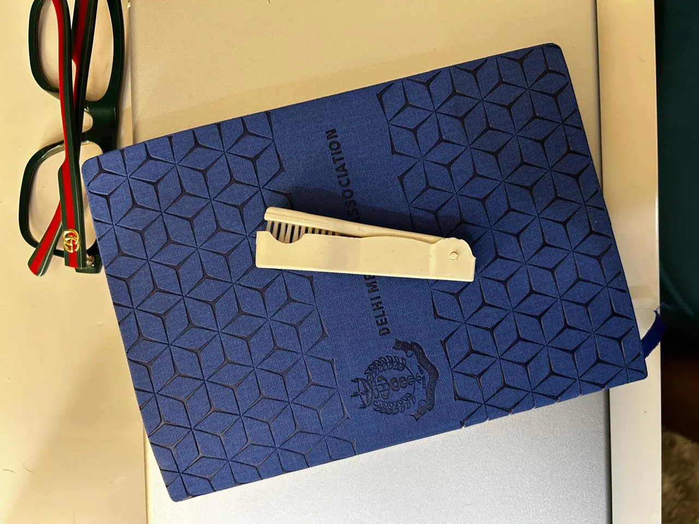

Innovations in Oral Sphere — Ahead of the Curve
Co-edited research book · first editor.
 OFFICIAL WEBSITE
OFFICIAL WEBSITE
QUESTIONS BEFORE CLAIMS
Research became the bridge between clinical questions and population-health thinking. The record includes four peer-reviewed publications, three as first author, a co-edited research book and four academic presentations.
Innovation developed from the same practical lens: identifying simple barriers to hygiene and sterilisation, then designing low-cost responses registered in India and the United Kingdom.

SELECTED SCHOLARLY WORK
Co-edited research book · first editor.
Indian Medical Association Clinical Review Newsletter · first author.
International Journal of All Research Education and Scientific Methods.
Published through international and national dental-student journals.
Registered design focused on portable oral-hygiene access.
Registered design exploring accessible sterilisation beyond fully resourced clinics.
Including first prize at MAIDS and an invited Young Student Speaker presentation at ADOH 2023 in Dubai.